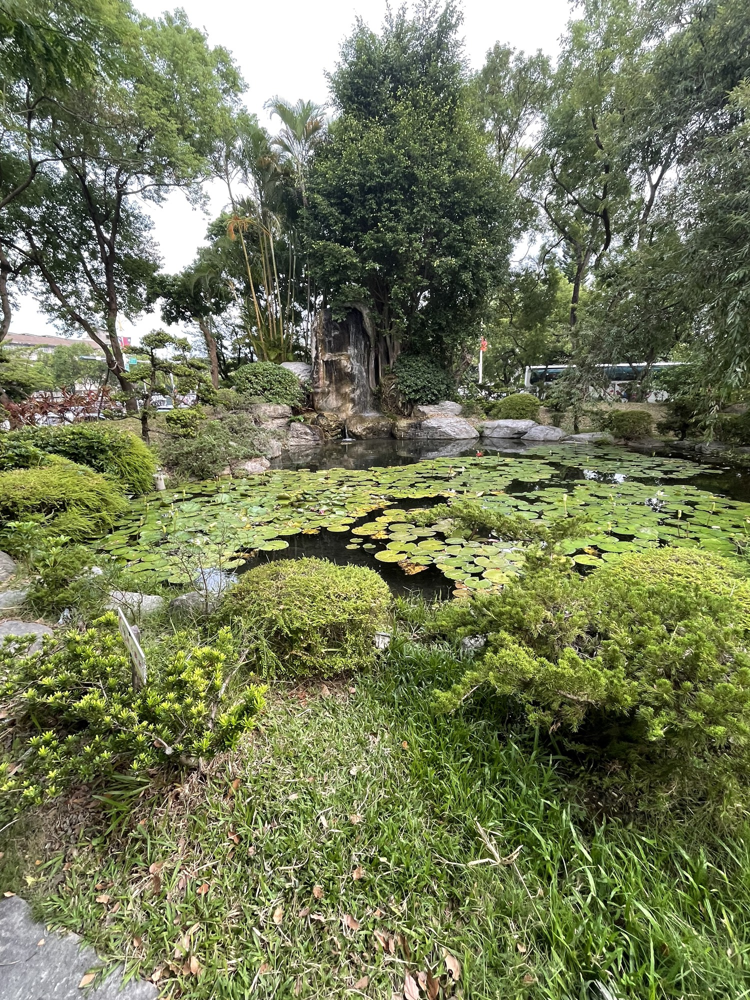

課程設計與時俱進，對應 AI、永續與健康等產業趨勢，培養市場所需的全方位管理人才
從分工、時程到資源配置，培養將工作轉化為可執行流程的能力，建立穩健的營運思維。
結合數位行銷、大數據分析與電子商務，運用科技創造商業價值，掌握智慧時代競爭優勢。
聚焦綠色經濟與社會責任，結合花東在地優勢，提出具情感連結的創新方案與地方創生策略。
不只是烹飪，更是涵蓋進貨、成本控制、回購設計與服務管理的完整餐飲經營訓練。
慈濟大學經營管理學系（原行銷與流通管理學系）以培養具有人文素養、創意思考、團隊合作、跨文化視野與重視職場倫理的專業管理人才為宗旨。
本系以社會事業與非營利組織之經營管理為專業發展主軸，強調跨域學習與實務導向，透過與知名企業合作、海內外實習、專案機會與業界參訪，讓學生在學期間即累積實戰經驗。
課程涵蓋管理五大功能（生產、行銷、人資、研發、財務），並融入資訊科技與設計思考，目標是培養具備市場競爭力的 π 型斜槓人才。
前往官方網站
四年學習脈絡清晰：前兩年打底，後兩年做中學，並有完整實習與專題實作
本系師資皆具博士學位，專長涵蓋組織創造力、財務管理、永續創新與服務業管理等領域
組織創造力、電子傳播與行銷、服務業管理、善良與智慧領導
財務管理、一般管理
永續創新、地方創生、實務專題指導
經營管理、跨域實作與就業準備
更多師資詳情請至 官方師資介紹頁面
歡迎來電或來信洽詢招生、課程與合作相關事宜
970 花蓮市介仁街 67 號
慈濟大學 介仁校區
03-857-2677 分機 31682
系務助理：張雯萍